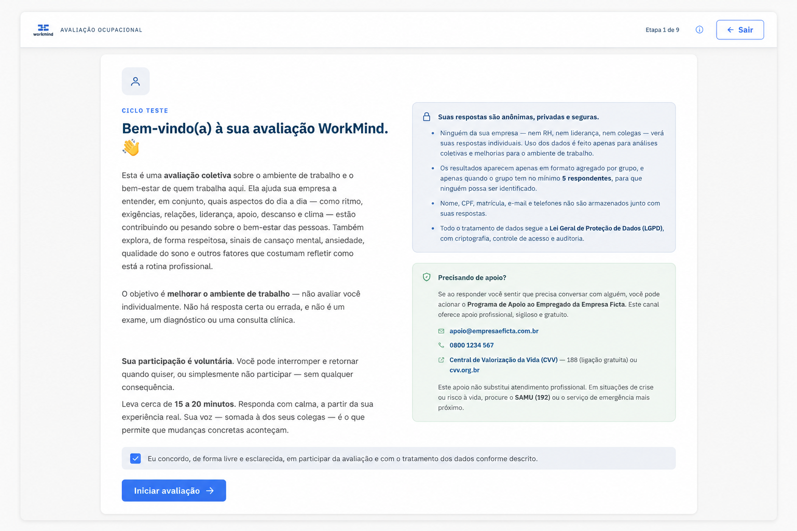
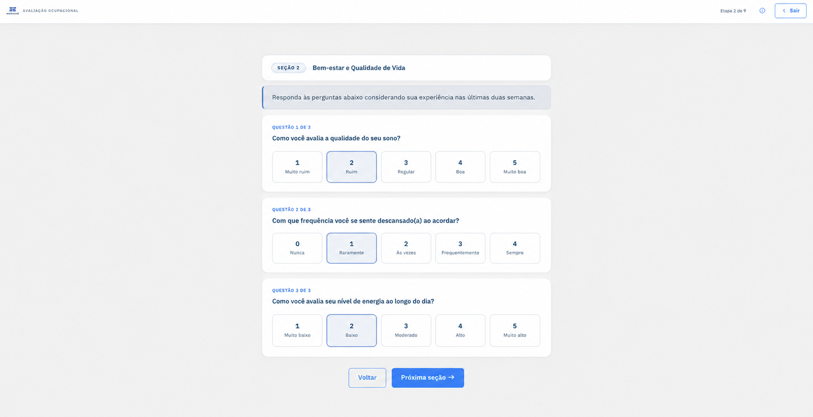

O que somos
Plataforma digital de saúde mental e riscos psicossociais no trabalho, que une o cuidado às pessoas ao suporte técnico e documental dos processos de gestão de riscos da organização.
Saúde mental e riscos psicossociais no trabalho
O WorkMind é a plataforma de saúde mental e riscos psicossociais no trabalho. Cada pessoa que responde recebe orientações individuais de cuidado. A organização recebe resultados consolidados por grupo, dashboard executivo e entregáveis técnicos que sustentam a NR-1, o GRO/PGR, a AEP e o plano de ação.
Portaria MTE
nº 1.419/2024
Revisão técnica
especializada
LGPD e
anonimização
PDF/A e integridade
documental
Sobre a solução
O WorkMind organiza a avaliação de fatores psicossociais relacionados à organização e às condições de trabalho em um processo digital, estruturado e rastreável.
A solução consolida os resultados por grupo exposto e gera insumos técnicos para apoiar os processos formais de gestão de riscos da empresa.
Plataforma digital de saúde mental e riscos psicossociais no trabalho, que une o cuidado às pessoas ao suporte técnico e documental dos processos de gestão de riscos da organização.
Organizamos aplicação, orientações individuais ao respondente, consolidação, análise agregada, priorização e geração de entregáveis técnicos em um fluxo unificado.
Avaliar → consolidar → priorizar → recomendar → documentar
Entregáveis
O WorkMind parte do que o produto realmente entrega: metodologia, rastreabilidade, consolidação e suporte documental.
Aplicação digital com instrumentos reconhecidos e critérios metodológicos definidos para o contexto ocupacional.
Resultados agregados por departamento ou grupo, sem disponibilização de respostas individuais.
Visualização executiva por departamento, com classificação em quatro níveis e apoio à priorização.
Documento completo com metodologia, mapa de fatores, resultados consolidados e critérios de classificação.
Recomendações iniciais organizadas por prioridade, responsáveis e prazos sugeridos.
Documento final em PDF/A, com assinatura digital, hash SHA-256 e mecanismos de rastreabilidade.
Valor para a empresa
O WorkMind ajuda a empresa a estruturar avaliações, organizar evidências e preparar insumos técnicos para seus processos formais de gestão de riscos.
Pode servir como insumo técnico para GRO/PGR, AEP, inventário de riscos e plano de ação da empresa.
Permite organizar fatores críticos, responsáveis, prazos e medidas iniciais com base em dados consolidados por grupo exposto.
A avaliação estruturada e a documentação organizada fortalecem a rastreabilidade das ações preventivas.
Processo digital end-to-end, com baixo atrito operacional e geração padronizada de entregáveis.
Contexto regulatório
A ausência de processos estruturados de identificação, avaliação e prevenção pode ampliar a exposição regulatória, administrativa e trabalhista da organização.
O WorkMind contribui para a demonstração de diligência ao organizar metodologia, resultados consolidados, prioridades e registros documentais.
Desde 26 de maio de 2026, o descumprimento das obrigações relativas aos fatores de riscos psicossociais está sujeito a autuação (Portaria MTE 765/2025).
Penalidades e enquadramentos dependem de fatores como porte da empresa, natureza da infração, número de trabalhadores alcançados e critérios aplicados pela fiscalização.
Como funciona
SaídaEscopo operacional definido
SaídaRespostas registradas
SaídaBase anonimizada
SaídaVisão executiva de risco
SaídaPDF/A assinado
SaídaBase documental para integração aos processos da empresa
Instrumentos e metodologia
A bateria de avaliação deve ser aplicada de acordo com o escopo definido para cada projeto, com análise consolidada por grupo e sem finalidade de diagnóstico clínico individual.
COPSOQ III © COPSOQ International Network, sob licença CC BY-NC-ND 4.0, aplicado na versão brasileira validada, sem modificações de itens, formulações ou dimensões. O uso não implica endosso da rede COPSOQ ao WorkMind.
Composição do escopoA composição final dos instrumentos pode variar conforme o escopo contratado, a população avaliada e a validação metodológica do projeto.
Limite de aplicaçãoOs instrumentos de rastreio clínico são utilizados exclusivamente para análise epidemiológica e agregada. O WorkMind não fornece diagnóstico médico individual.
Veja na prática
A jornada foi desenhada para tornar a participação objetiva e acolhedora, com etapas bem definidas e orientações apresentadas diretamente a cada respondente.
Conheça duas etapas da experiência de participação: a introdução e o preenchimento da avaliação.


Segurança e privacidade
O desenho técnico do WorkMind prioriza dados agregados, acesso controlado e rastreabilidade documental.
Exibição de resultados apenas para grupos que atendam ao critério mínimo definido, como k ≥ 5.
Destruição ou desvinculação de identificadores técnicos após o processamento, de acordo com as regras do projeto.
Gestores e empresas não recebem acesso às respostas individuais dos participantes.
Controles de acesso, trilha de auditoria, minimização de dados e tratamento orientado à finalidade.
Formato voltado à preservação e à consistência do documento final.
Hash associado ao entregável para verificação de integridade e rastreabilidade.
A condução e a aprovação técnica da avaliação cabem ao profissional designado pela organização ou ao parceiro de SST. O WorkMind fornece o método, a rastreabilidade e os entregáveis.
Autoridade clínica e de produto
O WorkMind combina supervisão técnica especializada, arquitetura de produto e integridade metodológica para apoiar avaliações responsáveis no contexto ocupacional.
Aplicação modular
O WorkMind une o cuidado com as pessoas à gestão de riscos da organização, em módulos que podem ser aplicados juntos ou em momentos distintos, conforme a necessidade e o momento de cada contratante.
Avaliação dos fatores psicossociais do ambiente e da organização do trabalho, com consolidação por grupo exposto e entregáveis que sustentam a NR-1, o GRO/PGR e a AEP.
Rastreamento agregado de bem-estar com foco em cuidado, orientação e prevenção. Cada respondente recebe orientações individuais ao final do preenchimento.
Os dois módulos integrados na mesma base, com visão completa de riscos e cuidado, liberação por etapas para reduzir a fadiga de resposta e série histórica comparável entre ciclos.
Aplicações
Estrutura a avaliação, organiza prioridades e oferece uma visão consolidada para tomada de decisão.
Produz insumos técnicos para integração aos processos de gerenciamento de riscos ocupacionais.
Fortalece rastreabilidade, governança e organização das evidências relacionadas às ações preventivas.
Apresenta indicadores consolidados e prioridades em uma linguagem objetiva e orientada à gestão.
Aplique o WorkMind com os seus clientes: o modelo de parceria permite que consultorias, SESMTs externos e serviços de SST conduzam campanhas completas com a metodologia e os entregáveis da plataforma.
Clínicas e profissionais que atuam em saúde ocupacional e bem-estar utilizam o WorkMind em seus programas, com a mesma base metodológica e o mesmo padrão de privacidade.
Escala operacional
PME
Médias empresas
Grandes empresas
Dúvidas frequentes
Entenda o papel do WorkMind e os limites técnicos da solução.
Não. O WorkMind gera avaliações, resultados consolidados e entregáveis que podem servir como insumos técnicos para o GRO/PGR, a AEP, o inventário de riscos e o plano de ação da empresa. A responsabilidade pela integração e gestão desses processos permanece com o empregador e seus profissionais responsáveis.
Não. A plataforma realiza avaliação estruturada e consolidação por grupo exposto. Não disponibiliza diagnóstico médico individual, laudo clínico, perícia ou acesso gerencial às respostas individuais.
Não. As respostas são desvinculadas dos identificadores após o processamento e nenhum resultado é exibido para grupos com menos de 5 respondentes (k ≥ 5), sem exceções, inclusive para perfis administrativos. Gestores e empresas recebem apenas resultados agregados.
O relatório organiza metodologia, resultados, prioridades e registros documentais, podendo apoiar a preparação da empresa para auditorias e fiscalizações. Sua aceitação e utilização dependem do contexto, das exigências aplicáveis e da integração aos demais processos da organização.
Não existe garantia automática de conformidade. O WorkMind apoia a identificação, a avaliação estruturada e a documentação dos fatores psicossociais, mas não substitui as obrigações legais, técnicas e administrativas do empregador.
A referência do WorkMind para a avaliação psicossocial é anual, com reavaliação antecipada após mudanças organizacionais relevantes, incidentes ou por decisão do responsável técnico. Pulsos de bem-estar do Módulo M2 podem ter periodicidade própria, definida no escopo contratado.
O instrumento essencial da avaliação psicossocial é o COPSOQ III, aplicado na versão média brasileira validada, sem modificações. Conforme o escopo, a avaliação pode incluir instrumentos de rastreio agregados de saúde, como PHQ-8, GAD-7 e AUDIT-C. A composição final é definida de acordo com a população, os objetivos do projeto e a validação metodológica, sob revisão técnica especializada.
Não. A plataforma também pode apoiar programas de saúde ocupacional, bem-estar e prevenção, conforme o escopo definido. O módulo de riscos psicossociais gera insumos técnicos para os processos relacionados à NR-1, enquanto o módulo de saúde mental amplia o cuidado e a orientação aos participantes.
Não. Além de empresas, o WorkMind pode ser utilizado por consultorias, serviços de SST, clínicas e profissionais de saúde em programas conduzidos para seus clientes, respeitando os critérios técnicos, contratuais e de privacidade aplicáveis.
A condução e a aprovação técnica da avaliação cabem ao profissional com competência em SST designado pela organização, ou ao parceiro de SST que conduz o projeto. O WorkMind fornece a metodologia estruturada, os instrumentos, a rastreabilidade e os entregáveis, e registra a identificação e a qualificação do responsável em cada avaliação.
Além de responder aos questionários de forma voluntária e anônima, a metodologia registra a consulta aos trabalhadores sobre a percepção dos riscos e a participação da CIPA, quando existente, conforme exigido pela NR-1 e pela NR-17. As percepções relatadas integram as evidências da avaliação, sempre de forma agregada e sem identificação individual.
Contato comercial
Entenda como o WorkMind pode apoiar sua organização no cuidado com a saúde mental das pessoas, na avaliação de riscos psicossociais e na preparação de evidências e insumos técnicos para a NR-1.
Converse com o time WorkMind e entenda como dimensionar a avaliação para a estrutura e o momento da sua organização.